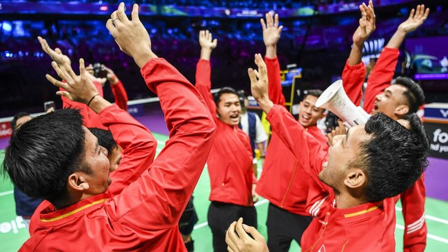

Thomas Cup: Ganda Putra Tak Mau Kecolongan Dua Angka Lawan Korea
CNN Indonesia
Kamis, 02 Mei 2024 18.42 WIB
Bagas/Fikri salah satu ganda yang ada dalam skuad Indonesia di Thomas Cup 2024. (ANTARA FOTO/GALIH PRADIFTA)
Jakarta, CNN Indonesia -- Pelatih ganda putra, Aryono Miranat tak mau pasukan ganda putra kehilangan dua angka dalam laga Indonesia vs Korea di perempat final Thomas Cup 2024.
Indonesia akan menghadapi Korea dalam laga perempat final Thomas Cup 2024. Di atas kertas, sektor ganda bakal jadi kekuatan utama Korea.
Saat Indonesia kalah dari Korea di Asian Games 2022 (2023), Indonesia kehilangan dua angka dari nomor ganda. Aryono tak mau hal tersebut kembali terjadi.
| Pilihan Redaksi | |
|
Karena itulah, Aryono akan berusaha sekuat tenaga menyiapkan pemain ganda putra agar bisa berbicara lebih banyak di laga kali ini. |
"Memang tim Korea itu kuat di dua ganda dan di beregu mereka benar-benar siap. Jadi kami akan menyiapkan pasangan terbaik yang juga siap."
"Kami tidak boleh lepas dua-duanya, harus ambil minimal satu kemenangan di ganda," ujar Aryono dalam rilis PBSI.
FOTO: Indonesia Bantai India di Thomas Cup 2024
Aryono menilai ganda Korea punya ciri khas permainan yang terlihat. Hal itulah yang bakal coba diantisipasi.
"Tipikal ganda Korea adalah kerapatan permainan baik saat bertahan maupun menyerang. Bola-bola drive mereka juga sangat baik jadi kami harus mewaspadai itu," tutur Aryono.
Indonesia membawa enam pemain ganda di skuad Thomas Cup 2024. Enam pemain tersebut adalah Fajar Alfian, Muhammad Rian Ardianto, Bagas Maulana, Muhammad Shohibul Fikri, Leo Rolly Carnando, dan Daniel Marthin.